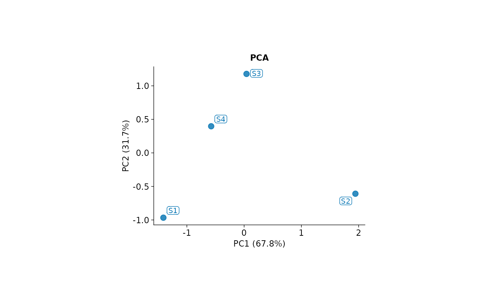

Customize glyvis plots with tidyplots
glyvis_plot_options.RdAll plot_*() functions and statistical autoplot() methods return a
tidyplot, which also inherits from ggplot. Continue styling with
tidyplots::adjust_*() functions, add components with tidyplots::add_*(),
or use ordinary ggplot2 layers. No global theme or options are changed.
Arguments
- ...
Must be empty. Supply plotting controls by their full argument names.
- title
Optional plot title. Defaults to
NULL.- width, height
Plot-area dimensions in millimetres.
NULLuses the tidyplots defaults (50 by 50 mm);NAfills the available graphics device. These are not export-page dimensions.- fontsize
Base text size in points. Defaults to 9.
- family
Font family. Defaults to
"sans".- palette
Color vector. A named vector maps group names to fixed colors across plots and subsets; unnamed palettes follow factor order.
NULLuses tidyplots palettes. Heatmaps and correlation plots use the blue, near-white, and red anchors ofcolors_diverging_BuRd. Volcano plots use grey for points that do not meet both cutoffs. Other plots use the tidyplots defaults for discrete and continuous values.
Details
All plotting controls follow ... in public function signatures. Supply
their full argument names; only the input object is positional.
Plot-specific controls are explicit named arguments of the corresponding
plotting functions and their autoplot() methods. See plot_pca(),
plot_plsda(), plot_oplsda(), plot_tsne(), plot_umap(),
plot_volcano(), plot_roc(), plot_boxplot(), plot_heatmap(),
plot_corrplot(), and plot_logo() for defaults and details.
Glycan summaries document their controls in plot_n_core_pie(),
plot_n_type_pie(), plot_n_branch_pie(), plot_n_branch_bar(),
plot_fuc_sia_pie(), plot_o_type_pie(), plot_isomers_per_comp(),
plot_glycans_per_site(), plot_sites_per_protein(), and plot_top10_bar().
Migration from earlier backends
Arguments specific to factoextra, EnhancedVolcano, GGally, pheatmap, and
ggdendrogram are no longer forwarded. Unsupported arguments error instead
of being ignored. Use the documented arguments or modify the returned tidyplot.
Replace PCA geom = "point" with the default label = FALSE,
repel = TRUE with label = TRUE, and volcano pointSize with point_size.
Move ggseqlogo arguments from ... into logo_args.
Export
Use ggplot2::ggsave() with explicit width, height and units, or
tidyplots::save_plot(). PDF/SVG preserve vector elements and editable text;
use a suitable graphics device and inspect labels at the final physical size.
Large feature sets may require a larger output, label suppression, or an
explicitly selected subset. Automatic label repulsion may omit crowded
text but never removes the underlying observations.
Examples
if (requireNamespace("glystats", quietly = TRUE)) {
mat <- matrix(c(3, 8, 5, 9, 2, 7, 6, 4, 1, 5, 6, 2), nrow = 3,
dimnames = list(paste0("V", 1:3), paste0("S", 1:4)))
se <- SummarizedExperiment::SummarizedExperiment(assays = list(mat))
p <- plot_pca(se, label = TRUE, point_size = 2.5, title = "PCA")
p |> tidyplots::adjust_size(width = 80, height = 60)
}
